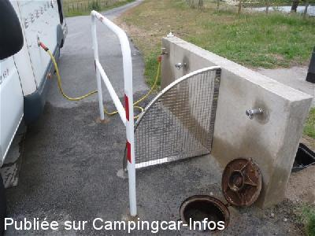
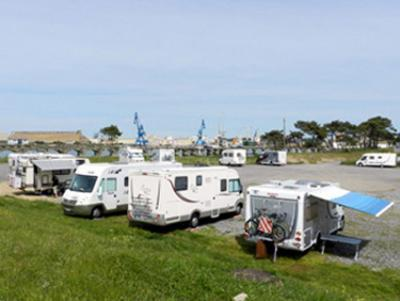
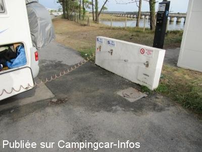
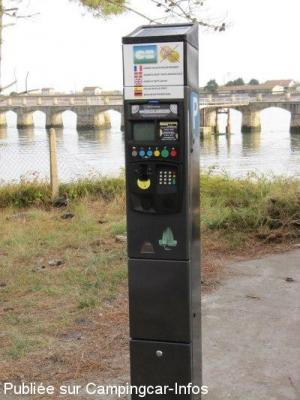
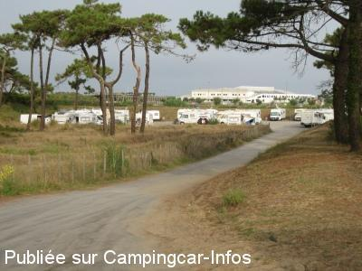

ASN = Aire de services avec stationnement nuit possible de :
ANGLET
(N° 400)
Accès/adresse :
Avenue de l'Adour
64600 ANGLET
64600 ANGLET
Latitude : (Nord) 43.52658° Décimaux ou 43° 31′ 35′′
Longitude : (Ouest) -1.51656° Décimaux ou -1° 30′ 59′′
Tarif : 2016
Stationnement : 6 à 10 €
Paiement par carte bancaire
Type de borne : Autre
Services :


Autres informations :
Ouvert toute l'année
50 emplacements
http://www.ville-anglet.fr

Le 10/08/2013 par cathare

Le 23/05/2013 par Morys

Le 01/09/2012 par Jacques 38

Le 01/09/2012 par Jacques 38

Le 01/09/2012 par Jacques 38
de
LaNoteBleue
le 19/10/2015 :
Deux nuitées calmes les 12 et 13 septembre 2015.
Aire très bien située, en contrebas de la route (les passages des voitures s'entendent moins).
Le long de l'Adour et à quelques "secondes" des plages.
Pour les commerces, il vaut mieux apporter un vélo. Cependant, espace de la Barre très très bien aménagé par la ville d'Anglet.Sur place, n'omettez pas une visite à Izadia (à 200 mètres); le parc écologique et l'exposition permanente au sein de cette maison de l'environnement peuvent se découvrir de différentes façons. En visite libre et gratuite tous les jours sauf le lundi.
Merci à la municipalité d'avoir conservé une aire pour les camping-cars, là où les mètres carrés doivent valoir très chers.
Deux nuitées calmes les 12 et 13 septembre 2015.
Aire très bien située, en contrebas de la route (les passages des voitures s'entendent moins).
Le long de l'Adour et à quelques "secondes" des plages.
Pour les commerces, il vaut mieux apporter un vélo. Cependant, espace de la Barre très très bien aménagé par la ville d'Anglet.Sur place, n'omettez pas une visite à Izadia (à 200 mètres); le parc écologique et l'exposition permanente au sein de cette maison de l'environnement peuvent se découvrir de différentes façons. En visite libre et gratuite tous les jours sauf le lundi.
Merci à la municipalité d'avoir conservé une aire pour les camping-cars, là où les mètres carrés doivent valoir très chers.
de
M&R
le 05/07/2015 :
5 MAI puis 6 JUIN 2015:
Aire très sympa, nuits tranquilles pour un juste prix, à 5 minutes des plages.
Halte idéale sur la route du PORTUGAL.
MERCI à la ville d' ANGLET.
Ce sera avec plaisir que nous reviendrons à nouveau.
5 MAI puis 6 JUIN 2015:
Aire très sympa, nuits tranquilles pour un juste prix, à 5 minutes des plages.
Halte idéale sur la route du PORTUGAL.
MERCI à la ville d' ANGLET.
Ce sera avec plaisir que nous reviendrons à nouveau.
de
GUYTOU 44
le 01/05/2015 :
oui effectivement il ne faut pas rater l'entréqui se trouve juste après le guichet du parc aventure, avec une interdiction aux voitures cyles motos sauf camping car
nuit calme , près de la barre de l'Adoure
6euros les 24 heures ,la police municipale est passée contrôler
oui effectivement il ne faut pas rater l'entréqui se trouve juste après le guichet du parc aventure, avec une interdiction aux voitures cyles motos sauf camping car
nuit calme , près de la barre de l'Adoure
6euros les 24 heures ,la police municipale est passée contrôler
de
michèle 44
le 20/01/2015 :
§ Début septembre 2014 nous avons passé 2 nuits très calmes, on a tendance à manquer l'entrée car indiqué trop tard. Très belles ballades à faire sur la digue bien aménagée. aire de services pas très facile. Prix 6 €
§ Début septembre 2014 nous avons passé 2 nuits très calmes, on a tendance à manquer l'entrée car indiqué trop tard. Très belles ballades à faire sur la digue bien aménagée. aire de services pas très facile. Prix 6 €
de
joca44
le 09/06/2014 :
2 nuits du 5 au 07/05/14:grande zone gravillonnée où l'on se gare comme bon nous semble.Très près de la plage,d'une aire de jeu,Mc DO,patinoire et bus pour Bayonne et Biarritz.Beaucoup de mouches.
2 nuits du 5 au 07/05/14:grande zone gravillonnée où l'on se gare comme bon nous semble.Très près de la plage,d'une aire de jeu,Mc DO,patinoire et bus pour Bayonne et Biarritz.Beaucoup de mouches.
de
paul73
le 30/07/2013 :
juillet2013:partage les 2 commentaires précédents,plage toute proche etbus urbain devant l'aire pour Biarritz ou Bayonne pour 1 prix dérisoire.
juillet2013:partage les 2 commentaires précédents,plage toute proche etbus urbain devant l'aire pour Biarritz ou Bayonne pour 1 prix dérisoire.
de
Morys
le 23/05/2013 :
Nous avons passé deux nuits sur cette aire en mai 2013. Située sur la rive gauche de l'Adour. (Le port est sur l'autre rive) Paiement pour 24 h par appareil, CB ou monnaie. Pas de borne mais il y a prise d'eau et possibilité de vidange eaux grises et noires. Le bus, ligne 10 nous mène à Biarritz. La ligne 16 à Bayonne.
L'espace est légèrement encaissé, ce qui nous protège un peu du vent lorsqu'il y en a.
Attention, indication à l'entrée est peu claire. Beaucoup de camping-caristes voient l'entrée tardivement. Il faut alors faire le tour du giratoire plus loin et revenir.
Nous avons passé deux nuits sur cette aire en mai 2013. Située sur la rive gauche de l'Adour. (Le port est sur l'autre rive) Paiement pour 24 h par appareil, CB ou monnaie. Pas de borne mais il y a prise d'eau et possibilité de vidange eaux grises et noires. Le bus, ligne 10 nous mène à Biarritz. La ligne 16 à Bayonne.
L'espace est légèrement encaissé, ce qui nous protège un peu du vent lorsqu'il y en a.
Attention, indication à l'entrée est peu claire. Beaucoup de camping-caristes voient l'entrée tardivement. Il faut alors faire le tour du giratoire plus loin et revenir.
de
Jacques Menu
le 01/09/2012 :
Aire sympa et calme à proximité des plages,10€ pour 24h00, services gratuits, un arrêt de bus à proximité permet de se rendre en ville, Bayonne et Biarritz pour 2 € pendant 24h00
Aire sympa et calme à proximité des plages,10€ pour 24h00, services gratuits, un arrêt de bus à proximité permet de se rendre en ville, Bayonne et Biarritz pour 2 € pendant 24h00
de
le 25/06/2012 :
§
de passage vendredi 22 juin, l'aire est une aire payante par carte bancaire sur horodateur derrière la borne de services à l'entrée : 6 euros par tranche de 24 h en ce moment et 10 euros en juillet et aout (pas d'électricité)
L'aire est gravillonnée et les services sont gratuits sur borne artisanale. Les places en nombre ne sont pas délimités. Il semble que cette aire ne soit ouverte que l'été mais je n'ai pas les dates d'ouverture.
§
de passage vendredi 22 juin, l'aire est une aire payante par carte bancaire sur horodateur derrière la borne de services à l'entrée : 6 euros par tranche de 24 h en ce moment et 10 euros en juillet et aout (pas d'électricité)
L'aire est gravillonnée et les services sont gratuits sur borne artisanale. Les places en nombre ne sont pas délimités. Il semble que cette aire ne soit ouverte que l'été mais je n'ai pas les dates d'ouverture.
de
jlou
le 13/03/2012 :
de passage début mars aire interdit:réservé aux forains
de passage début mars aire interdit:réservé aux forains